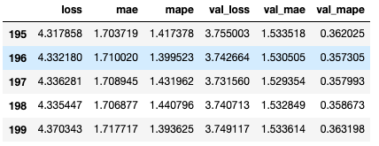

3-3,高阶API示范#
Pytorch没有官方的高阶API，一般需要用户自己实现训练循环、验证循环、和预测循环。
作者通过仿照tf.keras.Model的功能对Pytorch的nn.Module进行了封装，
实现了 fit, validate，predict, summary 方法，相当于用户自定义高阶API。
并在其基础上实现线性回归模型和DNN二分类模型。
import os
import datetime
from torchkeras import Model, summary
#打印时间
def printbar():
nowtime = datetime.datetime.now().strftime('%Y-%m-%d %H:%M:%S')
print("\n"+"=========="*8 + "%s"%nowtime)
#mac系统上pytorch和matplotlib在jupyter中同时跑需要更改环境变量
os.environ["KMP_DUPLICATE_LIB_OK"]="TRUE"
一，线性回归模型#
此范例我们通过继承上述用户自定义 Model模型接口，实现线性回归模型。
1，准备数据
import numpy as np
import pandas as pd
from matplotlib import pyplot as plt
import torch
from torch import nn
import torch.nn.functional as F
from torch.utils.data import Dataset,DataLoader,TensorDataset
#样本数量
n = 400
# 生成测试用数据集
X = 10*torch.rand([n,2])-5.0 #torch.rand是均匀分布
w0 = torch.tensor([[2.0],[-3.0]])
b0 = torch.tensor([[10.0]])
Y = X@w0 + b0 + torch.normal( 0.0,2.0,size = [n,1]) # @表示矩阵乘法,增加正态扰动
# 数据可视化
%matplotlib inline
%config InlineBackend.figure_format = 'svg'
plt.figure(figsize = (12,5))
ax1 = plt.subplot(121)
ax1.scatter(X[:,0],Y[:,0], c = "b",label = "samples")
ax1.legend()
plt.xlabel("x1")
plt.ylabel("y",rotation = 0)
ax2 = plt.subplot(122)
ax2.scatter(X[:,1],Y[:,0], c = "g",label = "samples")
ax2.legend()
plt.xlabel("x2")
plt.ylabel("y",rotation = 0)
plt.show()

#构建输入数据管道
ds = TensorDataset(X,Y)
ds_train,ds_valid = torch.utils.data.random_split(ds,[int(400*0.7),400-int(400*0.7)])
dl_train = DataLoader(ds_train,batch_size = 10,shuffle=True,num_workers=2)
dl_valid = DataLoader(ds_valid,batch_size = 10,num_workers=2)
2，定义模型
# 继承用户自定义模型
from torchkeras import Model
class LinearRegression(Model):
def __init__(self):
super(LinearRegression, self).__init__()
self.fc = nn.Linear(2,1)
def forward(self,x):
return self.fc(x)
model = LinearRegression()
model.summary(input_shape = (2,))
----------------------------------------------------------------
Layer (type) Output Shape Param #
================================================================
Linear-1 [-1, 1] 3
================================================================
Total params: 3
Trainable params: 3
Non-trainable params: 0
----------------------------------------------------------------
Input size (MB): 0.000008
Forward/backward pass size (MB): 0.000008
Params size (MB): 0.000011
Estimated Total Size (MB): 0.000027
----------------------------------------------------------------
3，训练模型
### 使用fit方法进行训练
def mean_absolute_error(y_pred,y_true):
return torch.mean(torch.abs(y_pred-y_true))
def mean_absolute_percent_error(y_pred,y_true):
absolute_percent_error = (torch.abs(y_pred-y_true)+1e-7)/(torch.abs(y_true)+1e-7)
return torch.mean(absolute_percent_error)
model.compile(loss_func = nn.MSELoss(),
optimizer= torch.optim.Adam(model.parameters(),lr = 0.01),
metrics_dict={"mae":mean_absolute_error,"mape":mean_absolute_percent_error})
dfhistory = model.fit(200,dl_train = dl_train, dl_val = dl_valid,log_step_freq = 20)
Start Training ...
================================================================================2020-07-05 23:07:25
{'step': 20, 'loss': 226.768, 'mae': 12.198, 'mape': 1.212}
+-------+---------+-------+-------+----------+---------+----------+
| epoch | loss | mae | mape | val_loss | val_mae | val_mape |
+-------+---------+-------+-------+----------+---------+----------+
| 1 | 230.773 | 12.41 | 1.394 | 223.262 | 12.582 | 1.095 |
+-------+---------+-------+-------+----------+---------+----------+
================================================================================2020-07-05 23:07:26
{'step': 20, 'loss': 200.964, 'mae': 11.584, 'mape': 1.382}
+-------+---------+--------+------+----------+---------+----------+
| epoch | loss | mae | mape | val_loss | val_mae | val_mape |
+-------+---------+--------+------+----------+---------+----------+
| 2 | 206.238 | 11.759 | 1.26 | 199.669 | 11.895 | 1.012 |
+-------+---------+--------+------+----------+---------+----------+
================================================================================2020-07-05 23:07:26
{'step': 20, 'loss': 188.247, 'mae': 11.387, 'mape': 1.172}
+-------+---------+--------+-------+----------+---------+----------+
| epoch | loss | mae | mape | val_loss | val_mae | val_mape |
+-------+---------+--------+-------+----------+---------+----------+
| 3 | 185.185 | 11.177 | 1.189 | 178.112 | 11.24 | 0.952 |
+-------+---------+--------+-------+----------+---------+----------+
================================================================================2020-07-05 23:07:59
{'step': 20, 'loss': 4.14, 'mae': 1.677, 'mape': 1.845}
+-------+-------+-------+-------+----------+---------+----------+
| epoch | loss | mae | mape | val_loss | val_mae | val_mape |
+-------+-------+-------+-------+----------+---------+----------+
| 199 | 4.335 | 1.707 | 1.441 | 3.741 | 1.533 | 0.359 |
+-------+-------+-------+-------+----------+---------+----------+
================================================================================2020-07-05 23:07:59
{'step': 20, 'loss': 4.653, 'mae': 1.775, 'mape': 0.679}
+-------+------+-------+-------+----------+---------+----------+
| epoch | loss | mae | mape | val_loss | val_mae | val_mape |
+-------+------+-------+-------+----------+---------+----------+
| 200 | 4.37 | 1.718 | 1.394 | 3.749 | 1.534 | 0.363 |
+-------+------+-------+-------+----------+---------+----------+
================================================================================2020-07-05 23:07:59
Finished Training...
# 结果可视化
%matplotlib inline
%config InlineBackend.figure_format = 'svg'
w,b = model.state_dict()["fc.weight"],model.state_dict()["fc.bias"]
plt.figure(figsize = (12,5))
ax1 = plt.subplot(121)
ax1.scatter(X[:,0],Y[:,0], c = "b",label = "samples")
ax1.plot(X[:,0],w[0,0]*X[:,0]+b[0],"-r",linewidth = 5.0,label = "model")
ax1.legend()
plt.xlabel("x1")
plt.ylabel("y",rotation = 0)
ax2 = plt.subplot(122)
ax2.scatter(X[:,1],Y[:,0], c = "g",label = "samples")
ax2.plot(X[:,1],w[0,1]*X[:,1]+b[0],"-r",linewidth = 5.0,label = "model")
ax2.legend()
plt.xlabel("x2")
plt.ylabel("y",rotation = 0)
plt.show()
4，评估模型
dfhistory.tail()

%matplotlib inline
%config InlineBackend.figure_format = 'svg'
import matplotlib.pyplot as plt
def plot_metric(dfhistory, metric):
train_metrics = dfhistory[metric]
val_metrics = dfhistory['val_'+metric]
epochs = range(1, len(train_metrics) + 1)
plt.plot(epochs, train_metrics, 'bo--')
plt.plot(epochs, val_metrics, 'ro-')
plt.title('Training and validation '+ metric)
plt.xlabel("Epochs")
plt.ylabel(metric)
plt.legend(["train_"+metric, 'val_'+metric])
plt.show()
plot_metric(dfhistory,"loss")

plot_metric(dfhistory,"mape")

# 评估
model.evaluate(dl_valid)
{'val_loss': 3.749117374420166,
'val_mae': 1.5336137612660725,
'val_mape': 0.36319838215907413}
5，使用模型
# 预测
dl = DataLoader(TensorDataset(X))
model.predict(dl)[0:10]
tensor([[ 3.9212],
[ 8.6336],
[ 6.1982],
[ 6.1212],
[-5.0974],
[-6.3183],
[ 4.6588],
[ 5.5349],
[11.9106],
[24.6937]])
# 预测
model.predict(dl_valid)[0:10]
tensor([[ 2.8368],
[16.2797],
[ 2.3135],
[ 9.5395],
[16.4363],
[10.0742],
[15.0864],
[12.9775],
[21.8568],
[21.8226]])
二，DNN二分类模型#
此范例我们通过继承上述用户自定义 Model模型接口，实现DNN二分类模型。
1，准备数据
import numpy as np
import pandas as pd
from matplotlib import pyplot as plt
import torch
from torch import nn
import torch.nn.functional as F
from torch.utils.data import Dataset,DataLoader,TensorDataset
import torchkeras
%matplotlib inline
%config InlineBackend.figure_format = 'svg'
#正负样本数量
n_positive,n_negative = 2000,2000
#生成正样本, 小圆环分布
r_p = 5.0 + torch.normal(0.0,1.0,size = [n_positive,1])
theta_p = 2*np.pi*torch.rand([n_positive,1])
Xp = torch.cat([r_p*torch.cos(theta_p),r_p*torch.sin(theta_p)],axis = 1)
Yp = torch.ones_like(r_p)
#生成负样本, 大圆环分布
r_n = 8.0 + torch.normal(0.0,1.0,size = [n_negative,1])
theta_n = 2*np.pi*torch.rand([n_negative,1])
Xn = torch.cat([r_n*torch.cos(theta_n),r_n*torch.sin(theta_n)],axis = 1)
Yn = torch.zeros_like(r_n)
#汇总样本
X = torch.cat([Xp,Xn],axis = 0)
Y = torch.cat([Yp,Yn],axis = 0)
#可视化
plt.figure(figsize = (6,6))
plt.scatter(Xp[:,0],Xp[:,1],c = "r")
plt.scatter(Xn[:,0],Xn[:,1],c = "g")
plt.legend(["positive","negative"]);

ds = TensorDataset(X,Y)
ds_train,ds_valid = torch.utils.data.random_split(ds,[int(len(ds)*0.7),len(ds)-int(len(ds)*0.7)])
dl_train = DataLoader(ds_train,batch_size = 100,shuffle=True,num_workers=2)
dl_valid = DataLoader(ds_valid,batch_size = 100,num_workers=2)
2，定义模型
class Net(nn.Module):
def __init__(self):
super().__init__()
self.fc1 = nn.Linear(2,4)
self.fc2 = nn.Linear(4,8)
self.fc3 = nn.Linear(8,1)
def forward(self,x):
x = F.relu(self.fc1(x))
x = F.relu(self.fc2(x))
y = nn.Sigmoid()(self.fc3(x))
return y
model = torchkeras.Model(Net())
model.summary(input_shape =(2,))
----------------------------------------------------------------
Layer (type) Output Shape Param #
================================================================
Linear-1 [-1, 4] 12
Linear-2 [-1, 8] 40
Linear-3 [-1, 1] 9
================================================================
Total params: 61
Trainable params: 61
Non-trainable params: 0
----------------------------------------------------------------
Input size (MB): 0.000008
Forward/backward pass size (MB): 0.000099
Params size (MB): 0.000233
Estimated Total Size (MB): 0.000340
----------------------------------------------------------------
3，训练模型
# 准确率
def accuracy(y_pred,y_true):
y_pred = torch.where(y_pred>0.5,torch.ones_like(y_pred,dtype = torch.float32),
torch.zeros_like(y_pred,dtype = torch.float32))
acc = torch.mean(1-torch.abs(y_true-y_pred))
return acc
model.compile(loss_func = nn.BCELoss(),optimizer= torch.optim.Adam(model.parameters(),lr = 0.01),
metrics_dict={"accuracy":accuracy})
dfhistory = model.fit(100,dl_train = dl_train,dl_val = dl_valid,log_step_freq = 10)
Start Training ...
================================================================================2020-07-05 23:12:51
{'step': 10, 'loss': 0.733, 'accuracy': 0.487}
{'step': 20, 'loss': 0.713, 'accuracy': 0.515}
+-------+-------+----------+----------+--------------+
| epoch | loss | accuracy | val_loss | val_accuracy |
+-------+-------+----------+----------+--------------+
| 1 | 0.704 | 0.539 | 0.676 | 0.666 |
+-------+-------+----------+----------+--------------+
================================================================================2020-07-05 23:12:51
{'step': 10, 'loss': 0.67, 'accuracy': 0.703}
{'step': 20, 'loss': 0.66, 'accuracy': 0.697}
+-------+------+----------+----------+--------------+
| epoch | loss | accuracy | val_loss | val_accuracy |
+-------+------+----------+----------+--------------+
| 2 | 0.65 | 0.702 | 0.625 | 0.651 |
+-------+------+----------+----------+--------------+
================================================================================2020-07-05 23:13:10
{'step': 10, 'loss': 0.17, 'accuracy': 0.929}
{'step': 20, 'loss': 0.173, 'accuracy': 0.929}
+-------+-------+----------+----------+--------------+
| epoch | loss | accuracy | val_loss | val_accuracy |
+-------+-------+----------+----------+--------------+
| 98 | 0.175 | 0.929 | 0.169 | 0.933 |
+-------+-------+----------+----------+--------------+
================================================================================2020-07-05 23:13:10
{'step': 10, 'loss': 0.165, 'accuracy': 0.942}
{'step': 20, 'loss': 0.171, 'accuracy': 0.932}
+-------+-------+----------+----------+--------------+
| epoch | loss | accuracy | val_loss | val_accuracy |
+-------+-------+----------+----------+--------------+
| 99 | 0.173 | 0.931 | 0.166 | 0.935 |
+-------+-------+----------+----------+--------------+
================================================================================2020-07-05 23:13:10
{'step': 10, 'loss': 0.156, 'accuracy': 0.945}
{'step': 20, 'loss': 0.17, 'accuracy': 0.935}
+-------+-------+----------+----------+--------------+
| epoch | loss | accuracy | val_loss | val_accuracy |
+-------+-------+----------+----------+--------------+
| 100 | 0.168 | 0.937 | 0.173 | 0.926 |
+-------+-------+----------+----------+--------------+
================================================================================2020-07-05 23:13:11
Finished Training...
# 结果可视化
fig, (ax1,ax2) = plt.subplots(nrows=1,ncols=2,figsize = (12,5))
ax1.scatter(Xp[:,0],Xp[:,1], c="r")
ax1.scatter(Xn[:,0],Xn[:,1],c = "g")
ax1.legend(["positive","negative"]);
ax1.set_title("y_true");
Xp_pred = X[torch.squeeze(model.forward(X)>=0.5)]
Xn_pred = X[torch.squeeze(model.forward(X)<0.5)]
ax2.scatter(Xp_pred[:,0],Xp_pred[:,1],c = "r")
ax2.scatter(Xn_pred[:,0],Xn_pred[:,1],c = "g")
ax2.legend(["positive","negative"]);
ax2.set_title("y_pred");

4，评估模型
%matplotlib inline
%config InlineBackend.figure_format = 'svg'
import matplotlib.pyplot as plt
def plot_metric(dfhistory, metric):
train_metrics = dfhistory[metric]
val_metrics = dfhistory['val_'+metric]
epochs = range(1, len(train_metrics) + 1)
plt.plot(epochs, train_metrics, 'bo--')
plt.plot(epochs, val_metrics, 'ro-')
plt.title('Training and validation '+ metric)
plt.xlabel("Epochs")
plt.ylabel(metric)
plt.legend(["train_"+metric, 'val_'+metric])
plt.show()
plot_metric(dfhistory,"loss")

plot_metric(dfhistory,"accuracy")

model.evaluate(dl_valid)
{'val_loss': 0.17309962399303913, 'val_accuracy': 0.9258333394924799}
5，使用模型
model.predict(dl_valid)[0:10]
tensor([[0.9998],
[0.0459],
[0.0349],
[0.0147],
[0.9990],
[0.9995],
[0.8535],
[0.0373],
[0.2134],
[0.9356]])
如果对本书内容理解上有需要进一步和作者交流的地方，欢迎在公众号"Python与算法之美"下留言。作者时间和精力有限，会酌情予以回复。
也可以在公众号后台回复关键字：加群，加入读者交流群和大家讨论。